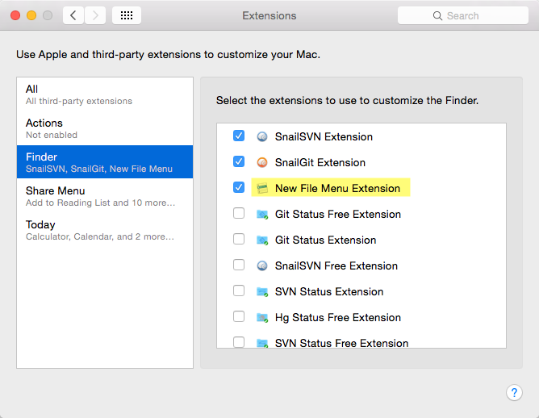
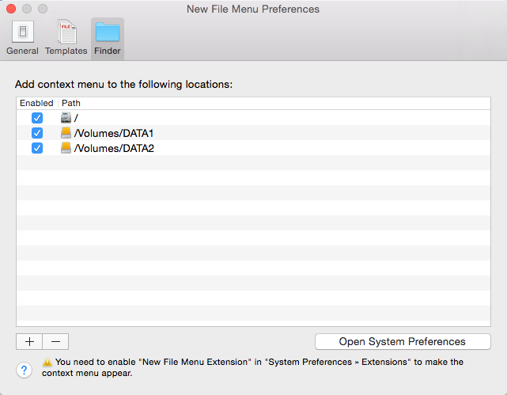
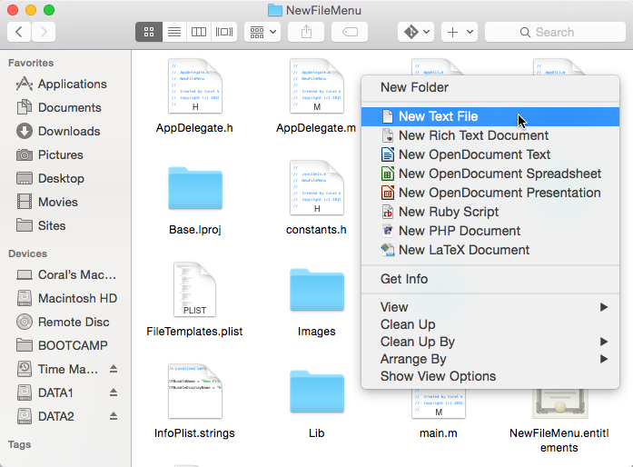

New File Menu is implemented as a Finder extension, you need to configure it before using it.
- Enable the Finder context menu extension
- Open the System Preferences app and navigate to the Extensions section
- Enable the "New File Menu Extension" Finder extension

- Configure the locations you would like to add the context menu
- Launch New File Menu
- Select the "Finder" tab
- Add/remove the locations that you would like to add/remove the context menu
- You can also enable/disable an item to add/remove the context menu

Now you can right click in the Finder window to create new files:
